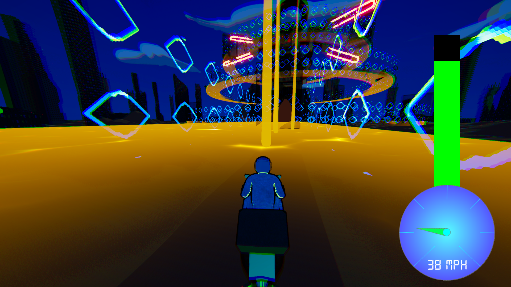
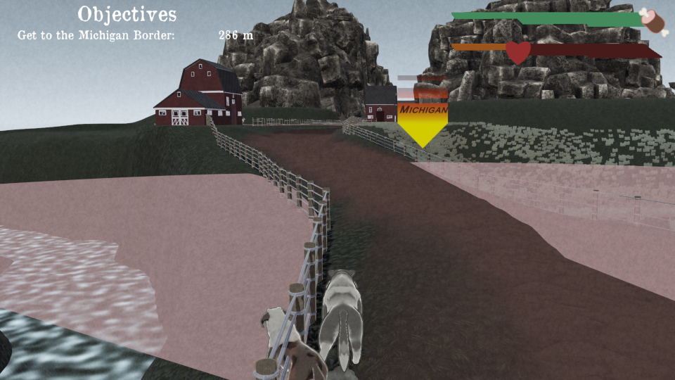
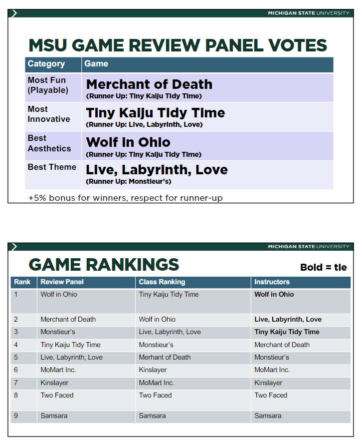
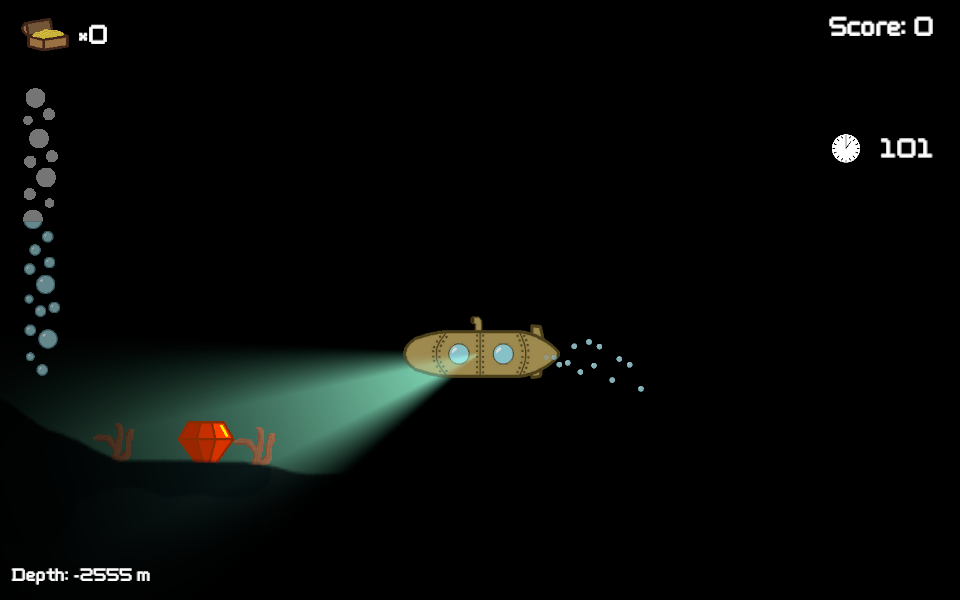

Unity Projects
Neon Oasis
Neon Oasis is a fast-paced hack and slash game where the player circles a massive boss, managing their fuel and speed as they dash around obstacles and attacks while chopping off parts of said boss. Brazenness is rewarded as fuel; the only way to regain fuel and keep moving is to attack the boss or by performing near misses with obstacles.
This was actually the first team where I was not the sole programmer (in fact, the team consisted entirely of programmers), and I learned how to integrate my code with those of others in a reliable, efficient, and timely manner. I was also able to learn and adopt more systems of coding for Unity. For example, we used a more event-based model for this project where previously I had relied on a manager based model, which proved to make implementation much more flexible.
Wolf in Ohio
Wolf in Ohio is a mission based survival/action game where the player plays as a lost wolf stranded in the treacherous state of Ohio. They must sneak around guard dogs in order to consume sheep to gain energy, get an item to a goal, avoid being mauled by the dogs, and more in order to escape to Michigan.
I worked as the sole programmer and was responsible for some of my code's implementation in terms of game design. I learned the importance of communication during this project, and I improved my communication ability with non-programmer members of my team in order for my code to be implemented easily and most efficiently.
This game was released to much appraisal from MSU game dev alumni, our classmates, and our instructors. It received a first place ranking from the alumni and tied for first place on our instructors' ranking.
Submarine Seeker
Developed during a game jam while I was a member of SpartaSoft, Submarine Seeker is a short two minute game where the player commandeers a submarine to collect sunken treasure at the bottom of the sea.
This was the first game I have developed to completion and is the first game that I have developed in a team. I designed the rotational style of movement for the player, implemented the URP lighting system, including the radar pings, as well as other various implementation details. It was particularly well received by other members of SpartaSoft.
Other Projects
ICER Coldfront
I have also worked as a student tech assistant for MSU's Institute for Cyber-Enabled Research to develop improvements for their project management tool Coldfront. I was responsible for a variety of both front end and back end tasks, including skinning the UI to fit MSU design requirements and integrating project export and import.
Although this experience has little implications for improving Unity or C# skills, it nevertheless was invaluable as a real world experience in programming. I have applied many skills that I have learned as a student, including using Trello and other project management software, source control, and having meetings with superiors in a non-classroom setting.